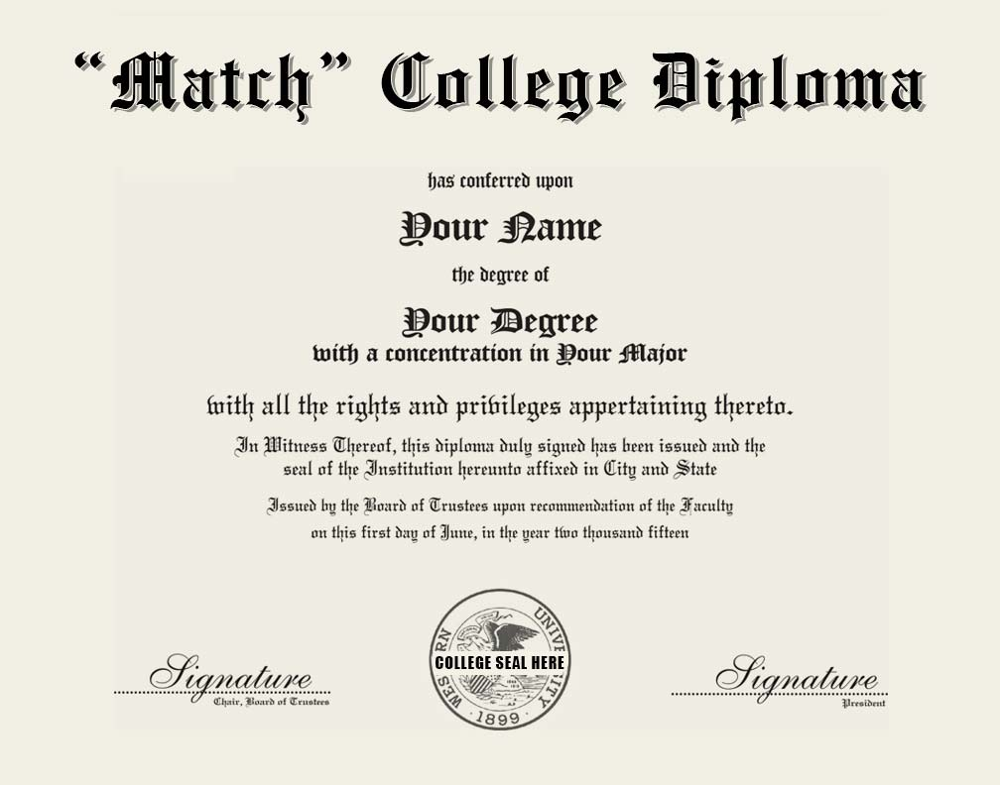

The SAT is a widely used standardized test needed in the college application process. This test is used worldwide and has a writing, critical reading as well as a mathematics section. The exam is 3 hours long or 3 hours and 50 minutes with the essay. There are not a lot of prerequisites/criteria for this exam, students need to be at high school level and fluent in English. The cost of this test is 45 dollars or 57 dollars for the exam with the essay.
There are also optional SAT subject tests that can boost a students score. They are separated into a 20 minute essay and a 40 minute multiple choice section. You can take up to three tests at any given test time. These tests consist of literature, history, math, the sciences and languages. These tests are $26 as well as a flat fee of $22 (excluding language tests). The subject tests are administered in August, October, November, December, May and June. A calendar of test dates and registration deadlines can be found below.
The ACT is also another standardized test used for acceptances into four-year colleges and universities in the U.S. as well as 225 universities worldwide. This exam tests a students knowledge in english, math, reading, science and an optional writing section. The test is scored on a range of 1 to 36. Like the SAT, the ACT has no criteria except for being fluent in English. This test in only administered in the U.S., Canada, Puerto Rico and U.S. territories. This test is administered in the U.S. and Canada seven times a year. In other countries it is administered five times a year.
Within the U.S. and Canada, the cost of the test is $46 without writing and $62.50 with it. Outside of these countries, $47.50 is added to the fee. Fee waivers are available for 11th and 12th graders (16 to 19yr olds) who are U.S. citizens or are testing in the U.S. or U.S. territories or need financial aid.
Most colleges in the U.S. don't have a preference to what test you take. However, these tests don't guarantee you a ride into college. To make sure that you understand, check in with your future colleges website to see what test is best for you.
| Preparing for the SAT | Preparing for the ACT |
|---|---|
|
Practice for the SAT, Click here Find test centers, Click here! Register for the SAT, Click here Learn how to apply as an international student,Click here Fees and Fee Waivers,Click here Special Circumstances, Click here Understanding your score, Click here |
Practice for the ACT, Click here Register, Click here Current fees, Click here How to register as a non-US student, Click here Viewing your scores, Click here How schools evaluate your score, Click here Viewing your score,Click here Understanding your score, Click here |

As an immigrant, you need to know what schools will accept you based on your situation. You will not be able to apply for financial aid (FAFSA) and might have
to compete with international students for the small pool of financial aid available.
Luckily, if a college recognizes you to be from America, your opportunities open up. Private colleges will offer financial aid for you.
There are also sixteen states where you are eligible for in-state tuition for public colleges. A number of these states are able to grant you
state-level financial aid.
Click Here to Learn More
The Hispanic-Serving Institution or HSI program provides funding for colleges or universities that host predominately low-income,
Hispanic students. For a college to be a HSI, 25% of the student body has to be Hispanic. The Hispanic Association of Colleges
and Universities (HACU) identifies 472 HSI's in America.
Click Here to Learn More